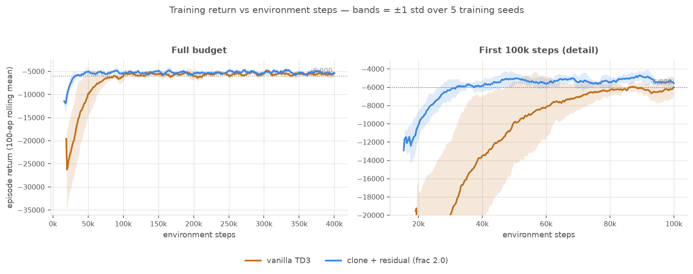

10. Vanilla RL — what the MPC prior actually buys¶
Status: complete (2026-07-31)
A from-scratch TD3 agent — no DeePC, no clone, same env, same reward — reaches 0.992 ± 0.015 on the canonical 78-seed sweep against DeePC's 0.385. It also matches the clone+residual hybrid: on reach rate the two are statistically indistinguishable (0.992 vs 0.997, overlapping CIs). So the MPC prior does not raise the ceiling on this task. What it does buy is measurable and narrower: 2.3× fewer environment steps to a given return, a ~10× tighter spread across training seeds, a small but clean return advantage (complete rank separation, \(p = 0.0079\)), and an exact no-regression-at-init guarantee. All numbers below are over 5 training seeds per arm, because the single-seed version of this result was misleading — see "Why 5 seeds".
Motivation (one line)¶
08 showed a residual lifts DeePC's 38.5 % to 94.9 %. Missing control: how much of that is the residual, and how much is just RL on this task?
Context¶
Every arm so far shares DeePC's DNA — the clone imitates it, the residual corrects it. That leaves the obvious question unanswered: on a 2-D kinematic unicycle with a dense shaped reward and free simulation, does an agent need DeePC at all? Without that baseline, the residual's 94.9 % has nothing to be measured against except the 38.5 % it improves on, which flatters it.
This entry adds the control arm and reports what survives.
Environment setup¶
The vanilla agent sees exactly the env, with no controller in the loop.
Action space — DeePC's own bounds, in physical units.
Read from sample_bounds in data/libraries_v0.npz via canonical_action_bounds() — the
same array handed to DeePC(u_bounds=...), so the reachable command set is identical, not
merely similar. v ≥ 0 means the robot may stall but never reverses.
There is deliberately no RescaleAction wrapper. SB3's off-policy algorithms already
normalize a non-symmetric Box internally (policy.scale_action / unscale_action) for the
actor head, the action noise and the replay buffer, so wrapping would add a second identical
affine map and hide (v, w) behind Box(-1, 1). Two consequences worth knowing: the
exploration noise σ = 0.1 lives in the normalized frame, so per axis it is
\(0.1 \times \tfrac{1}{2}(u_{\max}-u_{\min})\) — ±1.0 units/s on v, ±0.157 rad/s on w —
and the replay buffer stores normalized actions, so a checkpoint is only meaningful in an env
with matching bounds.
Observation space — the env's 5-D body-frame vector, min-max normalized.
| idx | channel | raw range | normalization |
|---|---|---|---|
| 0 | distance = ‖g − p‖ |
[0, 28.2843] |
d/14.142 − 1 |
| 1 | sin(bearing_rel) |
[-1, 1] |
identity |
| 2 | cos(bearing_rel) |
[-1, 1] |
identity |
| 3 | v_prev |
[0, 20] |
v/10 − 1 |
| 4 | w_prev |
[-π/2, π/2] |
w/(π/2) |
where bearing_rel = wrap_to_pi(atan2(g_y − y, g_x − x) − δ). This is the same vector the
residual actor consumes, minus its 2-D u_base block — a from-scratch agent has no clone
to read a base action from. Normalization is gymnasium.wrappers.RescaleObservation, matching
the residual env's own min-max scheme, so the two policies are conditioned alike.
Three design points carried over from 02: the observation is body-frame
(no world x, y, δ, g_x, g_y), which makes the policy invariant to where in the workspace the
episode happens; headings are (sin, cos) rather than an angle, avoiding the ±π wrap
discontinuity; and v_prev, w_prev expose the previous command.
Reward — the env's native DeePC-form cost, unmodified. Same Q = diag(1,1,2),
R = 1.3e-3 I, reach_bonus = 100, max_steps = 200, goal_tolerance = 0.5.
The vanilla arm is formally a POMDP
The reward's heading term is \(Q_{22}\,\delta^2\) in absolute world heading, and δ
appears nowhere in the body-frame observation. Three states with byte-identical
observations produce three different rewards:
```
δ=+0.000 obs=[5. 0. 1. 0. 0.] reward=−25.0000 = 25 + 0
δ=+1.571 obs=[5. 0. 1. 0. 0.] reward=−29.9348 = 25 + 2(π/2)²
δ=+3.142 obs=[5. 0. 1. 0. 0.] reward=−44.7392 = 25 + 2π²
```
Up to **19.7 reward per step** is unexplainable from the agent's view. It still learns
the task — termination and the reach bonus are position-only, which *is* observable — but
its value function cannot be exact. The residual arm is partly shielded from this: its
`u_base` comes from the clone, whose features include `y_current = (x, y, sin δ, cos δ)`,
so it has indirect access to `δ`. **The vanilla-vs-residual gap therefore mixes two
effects: learning from scratch, and an observability difference.**
Which algorithm, and why¶
TD3, same as the residual arm — and for the vanilla arm that choice was forced rather than optimized. The control arm must differ from the residual in exactly one dimension (no DeePC). Switching the optimizer too would confound "no MPC prior" with "different algorithm."
The residual's own reasons for TD3 over PPO and classic DDPG are in 08; the short version, plus what this entry adds:
- Off-policy replay. The fix the residual needs lives in a rare region — the far-field stalls. Replay revisits those transitions; PPO discards its rollouts after each update.
- A deterministic actor makes zero-init exact. This is the sharpest reason and it is
specific to the residual. Zeroing TD3's final actor layer gives
tanh(0) = 0for every state, so the residual is exactly 0 and the policy is bit-for-bit the clone at step 0. Zeroing PPO's mean head does not do this: SB3's defaultlog_std = 0meansσ = 1, and 61 % of sampled residuals exceed half of full authority — ±7.2 units/s onvat init. TD3 separates the deployed policy from the exploration behaviour (externalaction_noise, collection only); PPO fuses them, so "behaves like the prior" and "explores" cannot hold at once. - A single non-vectorized env is PPO's worst case. Everything here runs
DummyVecEnvwith one env; PPO's advantage needs thousands of parallel rollouts.
Two honest corrections to the folklore around this choice:
- TD3 is not the paper's algorithm. arXiv:2510.03354 uses classic DDPG; PPO was this repo's own earlier default. TD3 is a deliberate deviation within DDPG's family — DDPG plus twin critics, target-policy smoothing and delayed updates.
- "High-dimensional tasks favour TD3" is not a valid reason. If anything the reverse: off-policy methods get harder as action dimension grows, and PPO is what scales to high-DoF locomotion and RLHF. Here the point is moot — a 2-D action and 5-D observation are nowhere near either method's limit.
None of this is measured. Everything above reasons from algorithm properties. PPO on the vanilla arm remains an open follow-up — and the POMDP box above gives it a principled shot, since a stochastic policy can be optimal in a POMDP where a deterministic one is not.
Learning speed — the headline result¶

Environment steps for the 100-episode rolling-mean return to first clear −6000:
| arm | steps to −6000 | per training seed |
|---|---|---|
| vanilla TD3 | 69,547 ± 24,348 | 85,593 / 105,517 / 49,423 / 69,402 / 37,800 |
| clone + residual (frac 2.0) | 30,816 ± 5,214 | 29,067 / 24,517 / 34,788 / 38,731 / 26,975 |
2.3× on the means, with complete rank separation — the residual's slowest seed (38,731) still beats vanilla's fastest (37,800), so the exact two-sided Mann–Whitney test gives \(p = 0.0079\). The variance ratio is 4.7×: vanilla's time-to-threshold varies 2.8× on seed alone (37.8k → 105.5k), the residual's 1.6×.
This is a better initialization, not a faster learner
Read where the curves start. The residual's first plotted point is already near −12,000; vanilla's is −26,000 with its band reaching −35,000. That gap is zero-init: at step 0 the residual is the clone, a 38.5 %-reach policy, while vanilla is random. Once vanilla passes the residual's starting return around 30k steps, the two curves rise at broadly similar rates and converge by ~90k. So the honest claim is "you skip the first ~40k steps because you already own a controller," which is worth something only when environment steps are expensive. In free simulation, 40k steps is ~2.5 minutes.
Also note these are training returns, so they include exploration noise — the behaviour policy, not the deployed one — and the −6000 threshold is arbitrary; the ratio moves if you pick another level.
Side-by-side — clone vs vanilla TD3¶
Same two canonical showcase seeds as 07 and 08, so the arms are directly comparable across entries. The clone stalls in the far field; the from-scratch agent, which never saw DeePC, drives through and reaches.
| Clone — the DeePC surrogate (stalls) | Vanilla TD3 — from scratch (reaches) |
|---|---|
| seed 4104626029 | |
| seed 4104626034 | |
Each panel: trajectory (trail, goal ★, tolerance circle, heading marker) plus live v(t),
w(t) and cumulative-reward sparklines, real time at 40 fps. On seed 4104626029 the clone
truncates at step 200 with v decayed to ~1.0; vanilla reaches at step 116, cumulative
reward −23k vs the clone's −48k.
And the residual-vs-vanilla pairing on the four seeds where the frac=1.0 residual failed:
| clone + residual vs vanilla TD3 — seeds 4104626056 / 069 / 083 / 086 |
|---|
Seed 4104626083 is the hardest in the sweep — the only seed any frac=2.0 model fails, and
one of vanilla's three. The frac=1.0 residual misses it by 0.022 units (final distance
0.522 against a 0.5 tolerance).
Final performance — 5 training seeds × 78 eval seeds¶
| arm | reach per training seed | reach rate | pooled (390 ep) | return |
|---|---|---|---|---|
| DeePC (QP) | — (deterministic) | 30/78 = 0.385 | — | −13,799.6 |
clone f_θ |
— (deterministic) | 30/78 = 0.385 | — | −14,355.6 |
clone + residual, frac=1.0 |
74 73 70 76 69 | 0.928 ± 0.033 | 362/390 [0.898, 0.950] | −7,067.7 ± 102.7 |
clone + residual, frac=2.0 |
78 78 77 78 78 | 0.997 ± 0.005 | 389/390 [0.986, 1.000] | −4,777.3 ± 7.3 |
| vanilla TD3 | 78 78 78 78 75 | 0.992 ± 0.015 | 387/390 [0.978, 0.997] | −4,853.5 ± 77.1 |
What is and is not statistically supported (exact two-sided Mann–Whitney on 5 vs 5, so \(p = 0.0079\) is the floor for complete rank separation):
- vanilla ≫ DeePC / clone — decisive, no ambiguity.
frac=2.0>frac=1.0on reach — complete rank separation, \(p = 0.0079\), non-overlapping pooled CIs.frac=2.0> vanilla on return — complete rank separation, \(p = 0.0079\). All five residual runs beat all five vanilla runs.frac=2.0vs vanilla on reach — NOT separable. 77–78 vs 75–78 overlap.
The variance is the sharpest difference. Return spread across training seeds:
frac=2.0 22, vanilla 204, frac=1.0 266. The residual is roughly 10× more
reproducible; the DeePC base anchors where training lands. For a controller you intend to
deploy, that consistency may matter more than a fractional reach-rate difference.
Why 5 seeds¶
The first version of this experiment used one training seed and reported vanilla at 78/78 = 100 %. That was real for that checkpoint and not a property of the method — training seed 4 gives 75/78. Every number on this page is over 5 seeds because of it. Do not quote a single-seed reach rate for this project.
residual_frac was the residual's real bottleneck¶
The frac=1.0 default is underpowered, and this is a parameterization artifact rather than
a knowledge deficit. The composition centres authority on the base and then clips:
On the seeds it fails, the clone's u_base for v sits near zero (29–48 % of steps at
exactly 0), so the maximum v the residual can command averages ~11 of 20 and
73–93 % of steps clip. Worse, every a_res ≤ 0 collapses to the same applied v = 0 — a
dead zone the trained policy drifts into (mean a_res for v = −0.53 on seed
4104626083). Setting ρ = 2.0 restores the full range from a stalled base and recovers all
four failures, gained 4 / lost 0. The feared wider dead zone never materialized.
Conclusions¶
- From-scratch TD3 solves what DeePC cannot — 0.992 vs 0.385. DeePC's ceiling is its orientation-keyed local-linear libraries on a system that isn't globally Koopman-linearizable, not a limit of the task.
- The MPC prior does not raise the ceiling here. Reach rate cannot distinguish vanilla
from
frac=2.0. - What the prior does buy, measurably: 2.3× fewer steps to a given return (mostly a better initialization), a ~10× tighter return spread across seeds, a clean return advantage (\(p = 0.0079\)), and an exact, unit-testable no-regression-at-init guarantee that vanilla cannot offer at any price.
- Reach rate hides real differences. Per step, vanilla is the worst arm on the two
terms it isn't effectively supervised on — heading cost/step 6.64 vs
frac=2.0's 6.41 andfrac=1.0's 6.21, and control cost/step 0.127 vs 0.082 forfrac=1.0. It wins per-episode totals by finishing in 68 steps instead of 163. - Don't over-generalize from this benchmark. It is close to the least favourable test of RL + MPC: dense shaped reward, deterministic and fully observed plant, 2-D action, free unlimited simulation, no safety constraint binding during learning — precisely where end-to-end RL should win outright. And the prior being improved is a 38.5 % controller, so there is little knowledge to inherit. The method's premise is a decent model-based controller you want to improve.
Open / not yet reported¶
- PPO on the vanilla arm. The whole TD3-over-PPO argument is reasoning from properties, not measurement. The POMDP result gives PPO a principled shot.
- Paper action bounds (
v ∈ [10,20],w ∈ [±π/6]) — forward-only, 3× weaker turning. This is where end-to-end RL should struggle and the prior should matter; it needs a DeePC library re-collect under those bounds to be fair. The strongest remaining test of conclusion 5. - Heading-augmented vanilla observation. Appending
(sin δ, cos δ)would close the POMDP hole; does the per-step heading cost drop toward DeePC's? - Robustness to plant perturbation. Wrappers exist (
two_wheel_robot/env/perturbations.py: state disturbance, actuator-gain mismatch, control latency), but no results are reported here — the metric isn't settled yet. Two blockers: the frozen clone is a poor stand-in for DeePC on exactly this axis (DeePC re-solves its QP every step; the clone cannot), and at 5 training seeds the per-model scatter swamps the between-arm differences. - Reach rate at intermediate checkpoints. The sample-efficiency claim here is on training return; reach rate at 25k/50k/100k/200k would be the cleaner version.
Reproduce¶
# train the from-scratch baseline (no DeePC, no clone; same reward and bounds)
uv run python scripts/train_vanilla.py --timesteps 400000 --seed 0 \
--out data/vanilla_td3_400k.zip --monitor-out data/vanilla_400k_monitor
# four-way benchmark: DeePC (QP) vs clone vs clone+residual vs vanilla, 78 seeds
# (QP-bound: ~0.29 s per DeePC step, ~1 h for the sweep)
uv run python scripts/eval_residual.py --model data/residual_td3_400k_frac2.zip \
--vanilla data/vanilla_td3_400k.zip
# the residual with full authority -- the frac=1.0 default is underpowered
uv run python scripts/train_residual.py --timesteps 400000 --residual-frac 2.0 \
--out data/residual_td3_400k_frac2.zip --monitor-out data/residual_frac2_400k_monitor
# 5-seed sweep behind every number on this page (15 runs; ~25 min each, 6 in parallel)
for s in 0 1 2 3 4; do
uv run python scripts/train_vanilla.py --timesteps 400000 --seed $s \
--out data/seedsweep/van_s$s.zip --monitor-out data/seedsweep/van_s${s}_mon
uv run python scripts/train_residual.py --timesteps 400000 --seed $s --residual-frac 2.0 \
--out data/seedsweep/res_f2_s$s.zip --monitor-out data/seedsweep/res_f2_s${s}_mon
done
# learning-speed figure + steps-to-threshold table (reads the monitor CSVs above)
uv run python scripts/plot_learning_curves.py
# side-by-side videos: clone vs vanilla on the canonical showcase seeds
uv run python scripts/render_dashboard_video.py --compare clone-vanilla \
--vanilla-model data/seedsweep/van_s0.zip --seeds 4104626029,4104626034